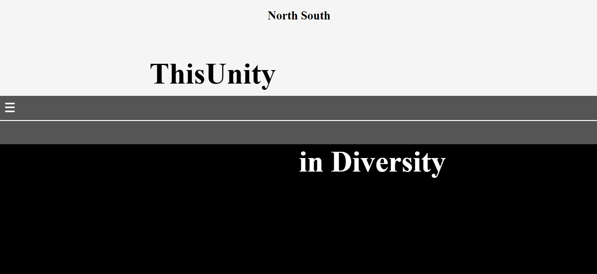

North South
Assignment 1 Artistic Reflection

North South Web Homepage - Khutso Nkadimeng
By Khutso Nkadimeng, 03 Oct 2021
My life has so far proven to have unlimited reserves of artistic raw materials waiting to be mined. Just like many students I lead a life of two halves. One in the city, and then there is home during holidays. With almost two years under lockdown due to the pandemic, it should not matter much where I am, but it does. Turning these two worlds into one requires, at least in my case, a constant and affordable internet access. To use the internet at home the way I am now in Johannesburg would cost me the same if not more than the rent I am paying in the city. That is partly what I am trying to highlight with my internet art
Vision
I do not just want to build a site as a pathway to my internet art. I want the website to be the art. The homogeneity must begin with the home page and spread with every page and content. My aim is to simulate the inequalities of the world we live in using the properties of the internet. I want to speak to the disparities of the Global North and the Global South, especially in the context of the creation of all technology tools that now run our lives. Unfortunately, as a South African, I do not have to travel the world to witness the implications of global inequality. I have samples scattered throughout the country. The North and the South are separated by a road in South Africa. That is what I am building as an interactive internet experience.
Process
Minimalism is the style guiding my process. I wanted to say as much as possible using as little as possible.
HomepageMy homepage made me appreciate just how difficult is it to make a good minimal design. My home page does not explicitly say what my project is about. But I wanted to use representations to inform the visitor. Starting with the name, my site is called North South. Which indicates polar opposites, and the global context of my project. I then use black and white colours and a tar road separating them. This is in reference to the racial inequalities in South Africa. The words standing out more than even the title is “ThisUnity in Diversity”. That is a word play on the South African motto, Unity in Diversity. However, I am trying to show Disunity.
PagesFor blog pages I decided to stick to my minimalist idea. I keep the consistent black and white colours and just keep everything clean.
Internet ArtWith internet art I wanted to demonstrate how people living side by side have such a different online experience. Certain things look the same on the surface, but they are not. In the case of my project, you need to buy data to go through the pictures and to buy data you need money. In both the North and South you generate money by simply clicking on a button. However, you earn four times more in the North, data costs five times less and the internet is four times faster.